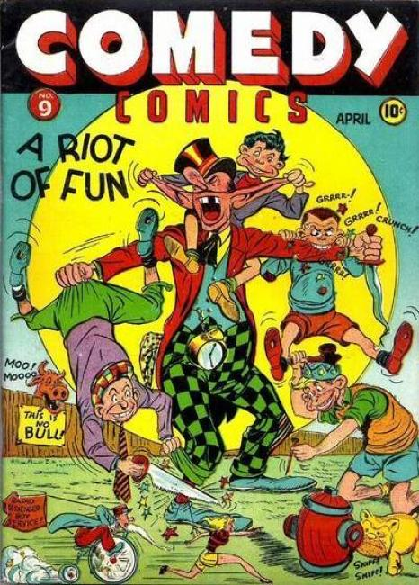

26 issues 1942-1946 by Timely, Atlas, Marvel
Numbering continues from Daring Mystery Comics (Marvel, 1940 series) #8. Changed from a superhero series to a comedy / funny animal series. Several superhero features continued into the first few issues under the new name and genre. Numbering continues with Margie Comics (Marvel, 1946 series) #35.
Stories:
- Li'l Professor and Rudy the Robot in "The Bear Hunt" by Frank Pretsch
- Splash Morgan in "By Garbage Bin to Mars" by Basil Wolverton
- Comedy Kids in "The Haunted House Hassle" by Charles Nicholas
- Captain Dash in "Scourge of Fear" by Ben Thompson
- Silver Scorpion in "The Aging Plague" by Harry Sahle